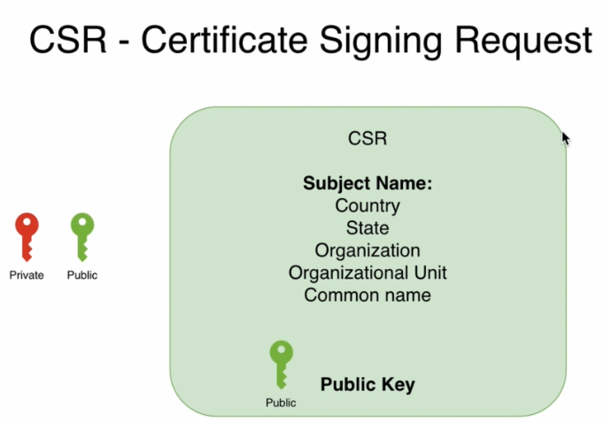
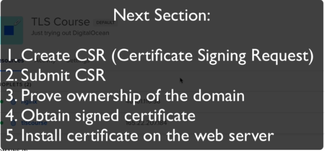
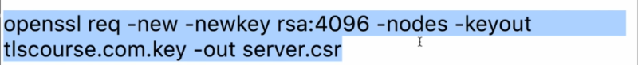

-->Before getting any certificate, You should create a Certificate Signing Request CSR, but before creating any CSR you should generate public private key player and for that you can use RSA algorithm or ECDSA Algorithm
-->CSR is actually created in the same format as a certificate, it does usually pem format
Recommendation
-->Choose CN(Common Name) according to the main domain where certificate will be used
---------------------------------------------------------
-->Browsers doesn't trust self-signed certificate bu we after that use CSR to make it valid
-->we make self signed certificate with openssl
-->self signed certificates are good if it used between two servers that are not public for example our web server and Cloudflare servers


-->nodes make unencrypted private key
----------------------------------------------------------